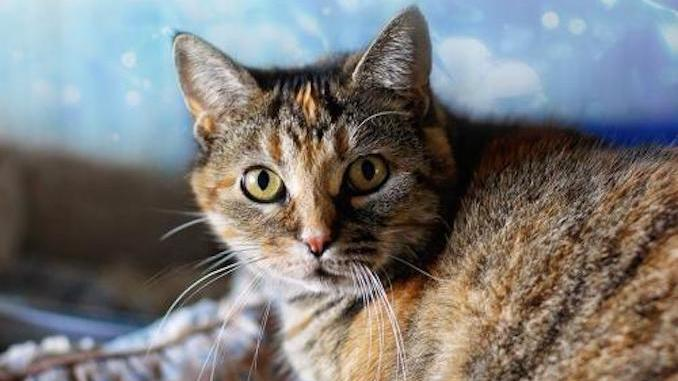

 Bella Cat
Click here to get details.| Name:NISHA VERMA Roll code-1906128 |
||
|---|---|---|
| Bella | Simba | |
| 1. Bella the cat is proof paws-itive of that. | 1. Simba and Patches were found abandoned at a condominium in Jurong by the roadside along a walkway. | |
| 2. Found outside mid-winter in the Kennedy and Steeles area. | 2. They were rscued and neutered.Patches is very chilled out. | |
| 3. Bella either peering out the window or playing with a soft catnip toy. | 3. They were rscued and neutered. They have been in foster care since and their personalities have developed. | |